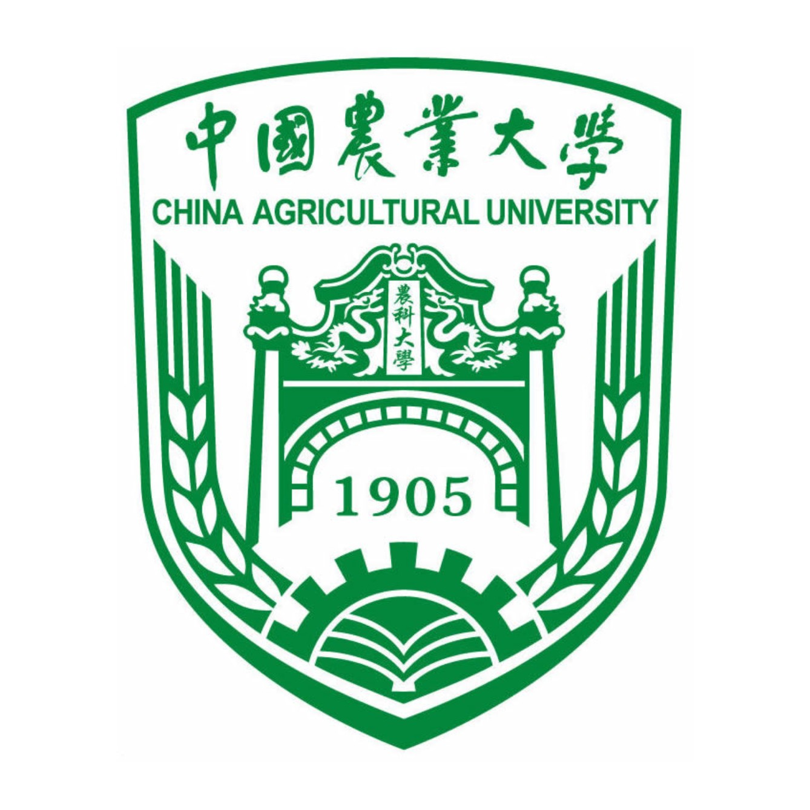
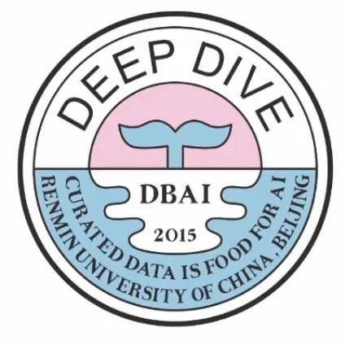

|
Zhengle Wang (王郑乐)
Homepage in English
王郑乐，目前就读于中国农业大学，大三。目前在中国人民大学信息学院担任科研助理，导师为范举教授。
曾在得物社区搜索组进行搜推算法方向实习。
目前研究兴趣为AI4DB, 数据挖掘。
Email /
Google Scholar /
Github /
教育经历
教育经历
学士学位，人工智能
中国农业大学 信息与电气工程学院
2021年9月 - 2026年7月

实习经历
实习经历
科研助理
中国人民大学高瓴人工智能研究院，AI Box 研究组
负责参与开源推荐系统框架RecBole的开发，实现部分序列化推荐模型的复现并加入到开源框架中。
2023年2月 - 2023年7月
科研助理
中国人民大学信息与资源管理学院，DataLab 组
研究方向为工作负载合成
2023年9月 - 至今

算法实习生
得物 APP
参与社区搜索的精排方向，负责相关性匹配模型调优与参数量化。
2024年6月 - 至今
论文/期刊
2024
-
Zhengle Wang, Ruifeng Wang, Minjuan Wang, Tianyun Lai, Man Zhang:
Self-supervised transformer-based pre-training method with General Plant Infection dataset.
Accepted by PRCV 2024. (CCF-C类会议)
2023
-
Yiming Liu, Zhengle Wang, Rujia Wang, Jiasi Chen, Hongju Gao:
Flooding-based MobileNet to identify cucumber diseases from leaf images in natural scenes.
Computers and Electronics in Agriculture. (IF : 8.3)
社会兼职
审稿人
获奖与荣誉
|